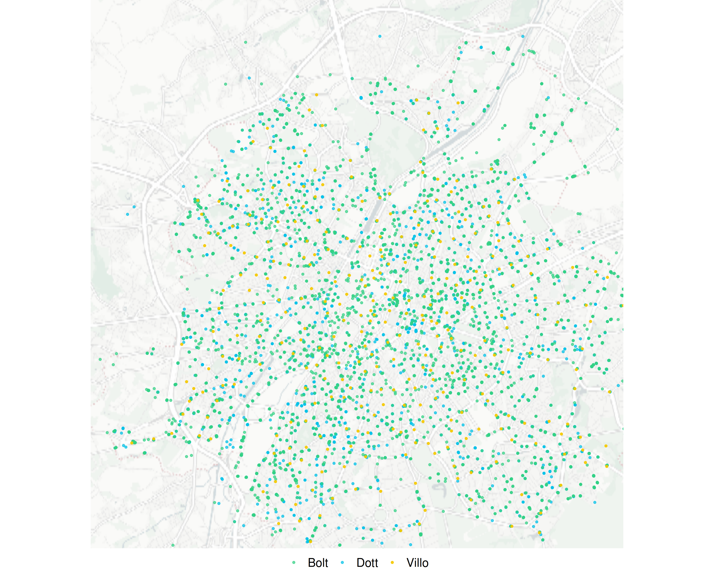

kurven = FileAttachment("kurven_daten.json").json()
farben = ({
"Villo": "#F5C800",
"Dott": "#00C2E8",
"Bolt": "#34D186"
})
dottSichtbar = Generators.observe(notify => {
notify(false)
let freigegeben = false
const beobachten = () => {
const sentinel = document.getElementById('dott-sentinel')
if (!sentinel) {
setTimeout(beobachten, 200)
return
}
const observer = new IntersectionObserver(entries => {
entries.forEach(entry => {
if (entry.isIntersecting && !freigegeben) {
freigegeben = true
notify(true)
observer.disconnect()
}
})
}, { threshold: 0 })
observer.observe(sentinel)
}
beobachten()
})
{
const sichtbareAnbieter = dottSichtbar
? ["Villo", "Bolt", "Dott"]
: ["Villo"]
const daten = kurven.filter(d =>
sichtbareAnbieter.includes(d.anbieter) && d.stunde === 7
)
const punkte5min = sichtbareAnbieter
.map(anb => daten.find(d => d.anbieter === anb && d.schwelle === 5))
.filter(Boolean)
return Plot.plot({
width: 580,
height: 400,
marginLeft: 65,
marginBottom: 55,
style: {
fontFamily: "'Source Sans 3', sans-serif",
fontSize: "13px",
background: "transparent"
},
x: {
label: "Gehzeit in Minuten →",
domain: [0, 15],
grid: false,
tickSize: 0
},
y: {
label: "↑ Bevölkerungsanteil (%)",
domain: [0, 100],
grid: true,
tickSize: 0
},
marks: [
Plot.ruleX([5], {
stroke: "#dddddd",
strokeDasharray: "5,4",
strokeWidth: 1.5
}),
Plot.text([{x: 5, y: 6}], {
x: "x", y: "y",
text: () => ["5 Min"],
fill: "#aaaaaa",
fontSize: 11,
dx: 7
}),
...sichtbareAnbieter.map(anb =>
Plot.line(
daten.filter(d => d.anbieter === anb),
{
x: "schwelle",
y: "anteil",
stroke: farben[anb],
strokeWidth: 2.5,
curve: "monotone-x"
}
)
),
Plot.text(
sichtbareAnbieter.map((anb, i) => ({ anb, i })),
{
x: () => 13,
y: d => 18 + d.i * 9,
text: d => d.anb,
fill: d => farben[d.anb],
fontWeight: "600",
fontSize: 13,
textAnchor: "start"
}
)
]
})
}Brüssel hat drei große Anbieter von Mietfahrrädern. Aber wie nah ist das nächste Fahrrad morgens, wenn die Stadt aufwacht?
Diese Analyse untersucht 24 Tage im Sommer 2026 und berechnet für jede bewohnte Rasterzelle die Gehzeit zum nächsten verfügbaren Mietfahrrad.
Wie weit ist es morgens
zum nächsten Mietfahrrad?
BRÜSSEL, im Zeitraum 27.06.2026 bis 20.07.2026
So sah Brüssel aus: 27. Juni 2026, 7 Uhr
Villo, Dott und Bolt stellten zusammen rund 14.800 Mietfahrräder im Stadtgebiet bereit.

Villo: Stationsbasiert
Villo betreibt 3.700 Mietfahrräder an 345 Stationen.
Im Median über 24 Tage erreichen um 7 Uhr morgens 56,4% der Brüsseler Bevölkerung ein Villo-Mietfahrrad in unter 5 Gehminuten.
Dott & Bolt:
Free-Floating
Die Mietfahrräder von Dott (ca. 5.600) und Bolt (ca. 5.500) verteilen sich frei im Stadtgebiet ohne feste Stationen.
Bei Dott und Bolt steigt die Kurve deutlich steiler an: Innerhalb von 5 Gehminuten erreichen rund 88 bzw. 90 % der Brüsseler Bevölkerung im Median über die 24 Tage ein Mietfahrrad.
Der Unterschied in Zahlen
Auch wenn Villo über rund 1.800 Fahrräder weniger verfügt, sind die Unterschiede für die fußläufige Erreichbarkeit beachtlich:
89,6% der Bevölkerung erreicht Dott in 5 Minuten
87,9% der Bevölkerung erreicht Bolt in 5 Minuten
56,4% der Bevölkerung erreicht Villo in 5 Minuten
Wie ist deine Gegend versorgt?
Die interaktive Karte zeigt die Erreichbarkeit für jede Rasterzelle in Brüssel nach Anbieter und Uhrzeit. Klicke dort auf eine Zelle für den Tagesverlauf.